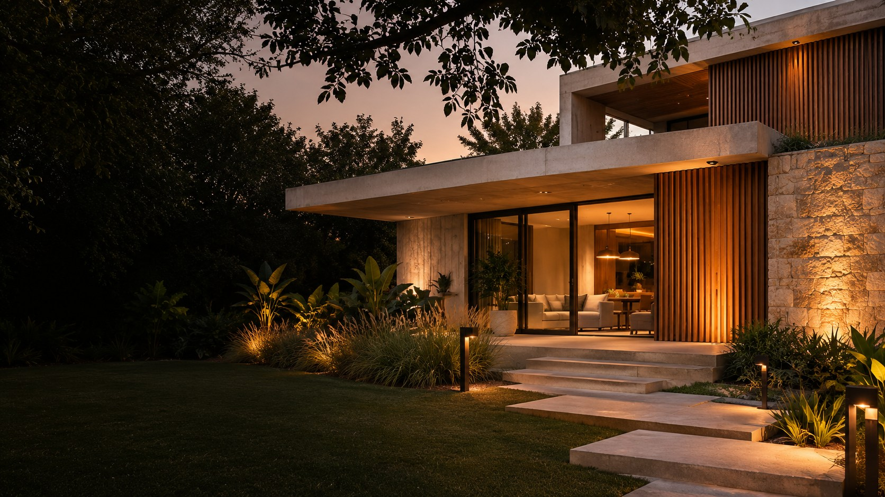
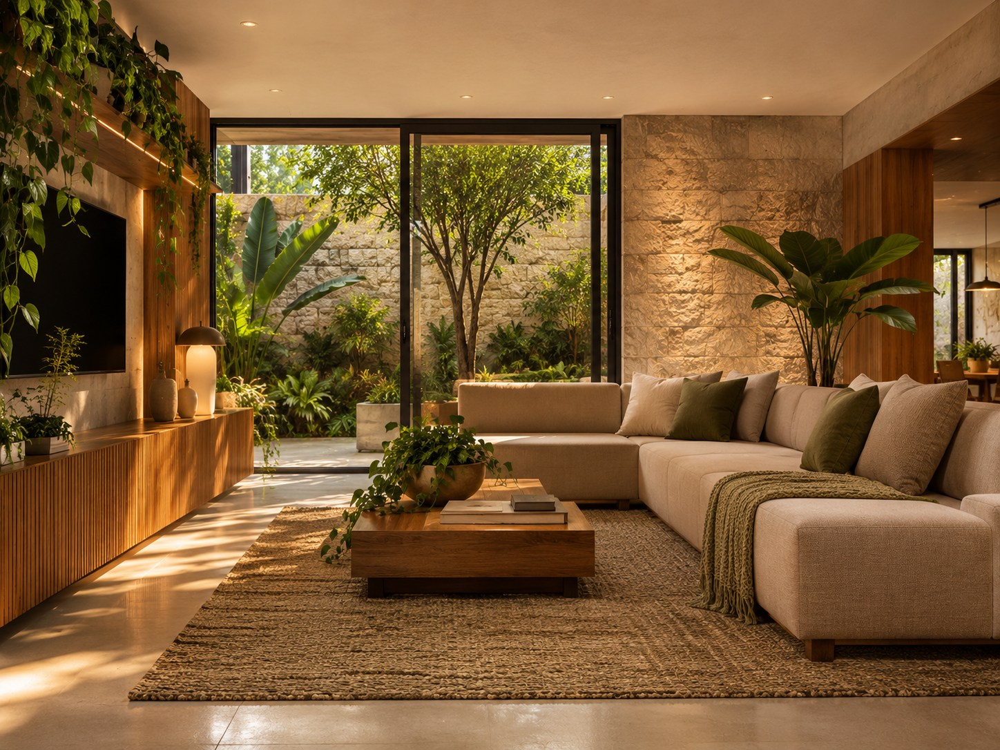

Escuta atenta
Necessidades e rotinas orientam o desenho.

Arquitetura · Interiores · Arquitetura · Interiores
Desenhar é dar forma ao que importa — luz, matéria e vida cotidiana.
Na FORMA, cada projeto começa pelo entendimento de quem ocupa o espaço. Antes de desenhar, ouvimos.
O trabalho começa nas perguntas certas: como a luz atravessa o dia, onde as pessoas se encontram, o que precisa permanecer simples. A partir daí, cada ambiente encontra uma forma própria.
Conheça nosso processo
O que orienta a Forma
Nossa missão é criar espaços claros, acolhedores e conectados à rotina de quem os vive.
Arquitetura e interiores desenhados para responder ao lugar.
Conheça algumas ideias da Forma.
Uma pedra tem peso. A madeira guarda marcas. A luz muda de lugar ao longo do dia. Escolher bem é perceber o que cada material acrescenta — e o que pode ser deixado de fora.
Conte o que imaginaUm percurso claro dá espaço para boas perguntas, decisões cuidadosas e um projeto coerente do primeiro traço ao último detalhe.
Conversamos sobre rotina, desejos, limites e prioridades. O briefing organiza o que precisa caber no espaço — e o que deve ser sentido nele.
Primeiro, as pessoas. Depois, a planta.Arquitetura é um trabalho de escuta e colaboração. Cada decisão busca equilibrar intenção, contexto e uso cotidiano.
Necessidades e rotinas orientam o desenho.
Arquitetura, interiores e paisagem em diálogo.
Materiais e soluções com intenção.
O projeto nasce da conversa, ganha forma com critério e se aproxima da vida real em cada etapa.
Desenhar com propósito é encontrar equilíbrio entre o que o espaço permite e o que as pessoas precisam.
Uma arquitetura atenta ao contexto, à luz e ao tempo.
Começamos com uma conversa sobre o espaço, as necessidades e as prioridades de quem vai usá-lo. A partir desse entendimento, definimos os próximos passos do trabalho.
Desenvolvemos projetos residenciais, interiores e espaços comerciais, considerando as características e o uso de cada lugar.
Materiais são avaliados em conjunto com a luz, a manutenção, a sensação tátil e a relação com o restante do projeto.
Preencha o briefing abaixo com os detalhes do espaço. O formulário ainda não está conectado a um canal de atendimento e não enviará seus dados.
Conte um pouco sobre o que gostaria de construir, renovar ou repensar. O briefing ajuda a organizar as primeiras ideias.
Atendimento pelo formulário em configuração · Nenhum dado será enviado ou armazenado.